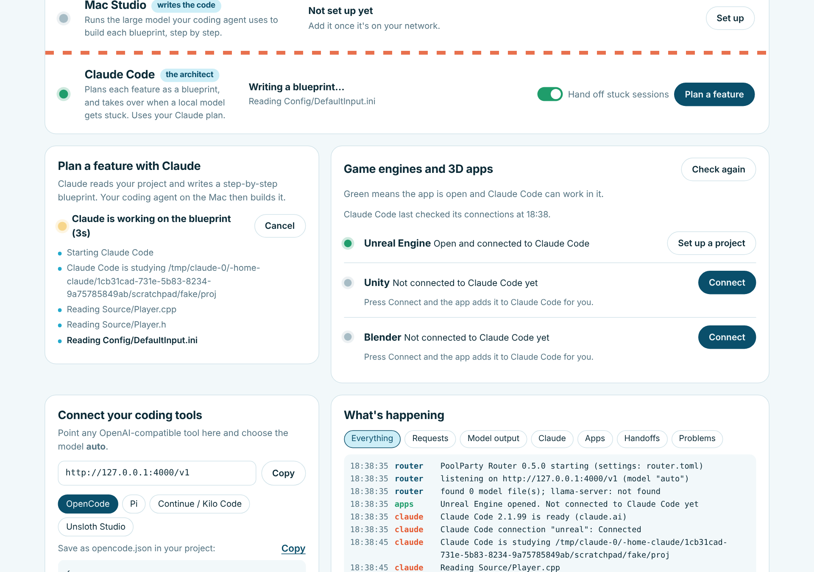
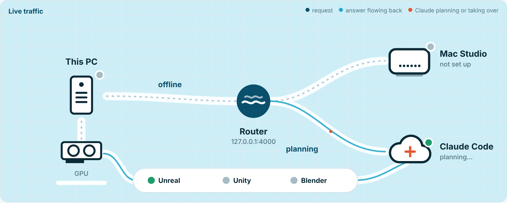
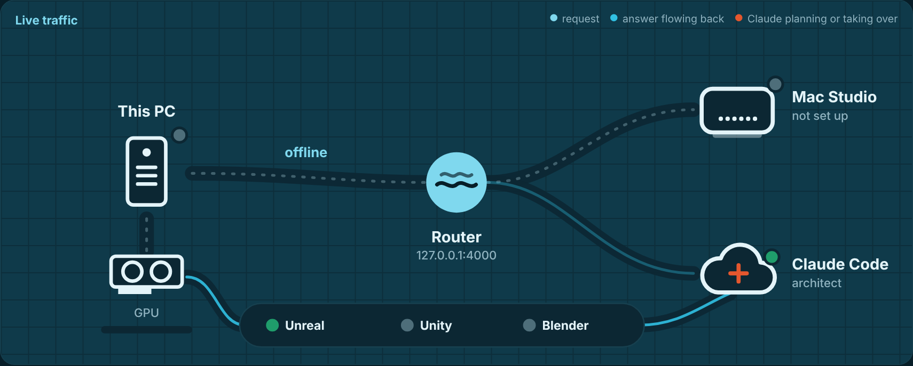

Claude Code plans each feature as a blueprint. Your Mac Studio writes the code. Your PC's graphics card runs Unreal, Unity and Blender, and the app shows whether each one is connected to Claude.
Point OpenCode, Pi, Continue, Kilo Code or Unsloth Studio at the router once. It picks the machine for every request, and Claude Code plans the work.
Runs Unreal, Unity and Blender. Status lights show which apps are open and connected to Claude Code, and one button connects them. While an engine is open, the app pauses its small model so the engine gets the whole GPU; when they close, the model handles tab completion again.
Writes the code. Your coding agent builds each blueprint step by step on the large model. If the Mac goes offline, quick chats fall back to your PC and agents get a clear message instead of a weaker model.
The architect. Describe a feature, choose your project folder, and Claude reads the project and writes BLUEPRINT.md: the goal, how it fits, and the build steps. It also takes over when a local model keeps hitting the same error. Everything runs on your Claude plan.
Local models sometimes loop on the same broken build. The router watches what actually happens, not what the model says about itself.
No config files. Everything happens in the app.



No. With only your PC, everything goes to your PC's model and Claude Code still plans and rescues stuck sessions. Add a bigger machine whenever you have one.
The router never calls Claude's API. Blueprints and handoffs run through Claude Code on your Claude Pro or Max plan, so there's nothing extra to pay. Planning uses some of your plan's usage, and you can pause handoffs with one switch.
A graphics card with enough memory for the model, a .gguf model file, and llama-server from llama.cpp. The app checks for all three and tells you what's missing.
Anything that talks to an OpenAI-compatible server: OpenCode, Pi, Continue, Kilo Code, Unsloth Studio and more. Use the model name auto, or local / remote to pick a machine yourself.
It only listens on your own PC unless you add another address, and the buttons that start programs only work from the PC itself. It can start with Windows and stays out of the way.
Free, open source, and running in a few minutes.